From RFI to SOP: How Automotive Customers Buy
RFI, RFQ, proposals, nominations, purchase orders, contracts and change requests, explained for engineers and managers.
0Overview Orientation
Most engineers meet RFQs, nominations and purchase orders indirectly: a manager asks for “an effort estimate by Friday”, a requirement suddenly becomes “contractual”, or work stops because “there is no PO yet”. This chapter explains the logic behind these moments so that they stop feeling like bureaucracy and start feeling like tools you can use.
The automotive industry buys things in a very particular way. Vehicles are developed over three to five years, sold for five to seven years and supported for ten years or more after that. A single camera ECU may be bought in millions of units, and a wrong price of one euro per unit can cost millions over the lifetime. A safety-relevant perception function that fails in the field can lead to recalls. Because the stakes and time spans are so large, the industry has built a disciplined sequence of steps — information, quotation, award, contract, order, delivery — where each step makes the commitment between customer and supplier a little more binding. Once you see the sequence, every document and meeting has an obvious place in it.
The chapters follow that sequence in time. Each one answers four questions: what it is, why it exists, what you actually do, and how to talk about it. Later chapters cover the cross-cutting topics — standards, the special nature of computer vision projects, roles, and practical playbooks — and the chapter ends with a one-page summary, self-check questions and a glossary.
0.1The running example
To keep things concrete, we follow one fictional project throughout the chapter. It is deliberately typical of current ADAS camera business:
AutoCo, a European car maker (the OEM), plans a new vehicle platform with start of production (SOP) in 2029. It needs a next-generation front camera for emergency braking, lane keeping, traffic sign recognition and high-beam assist — functions that must meet new Euro NCAP protocols and EU safety regulations. VisionTech is a Tier 1 supplier that builds camera modules and perception software. You work in VisionTech’s computer vision department. VisionTech in turn buys an image sensor, a system-on-chip (SoC) and data labeling services from Tier 2 suppliers — so VisionTech is a supplier to AutoCo and a customer for its own suppliers at the same time.
0.2A note on numbers
Durations, percentages and prices in this chapter are typical, illustrative values meant to build intuition. Real values differ by customer, product and company policy — always check your own organisation’s rules and the specific customer’s documents.
1The automotive supply chain Context
Before talking about RFQs and POs, you need to know who is buying from whom. Every RFQ, every nomination and every purchase order is simply a conversation across one link of this chain.
At the top sits the OEM (Original Equipment Manufacturer) — the car maker whose brand is on the vehicle. The OEM designs the vehicle, owns the relationship with the end customer, and is responsible for homologation, i.e. getting the vehicle legally approved for the road. OEMs rarely build electronics themselves; instead they define what they need and buy it.
The Tier 1 supplier delivers complete systems directly to the OEM: a camera module with its electronics, housing, software and calibration, ready to be mounted behind the windscreen. Tier 1s carry the system responsibility towards the OEM — if the camera fails, the OEM calls the Tier 1. Tier 2 suppliers deliver components to Tier 1s: image sensors, SoCs, lenses, perception software stacks, data labeling, test equipment. Tier 3 delivers the raw materials and sub-components further down.
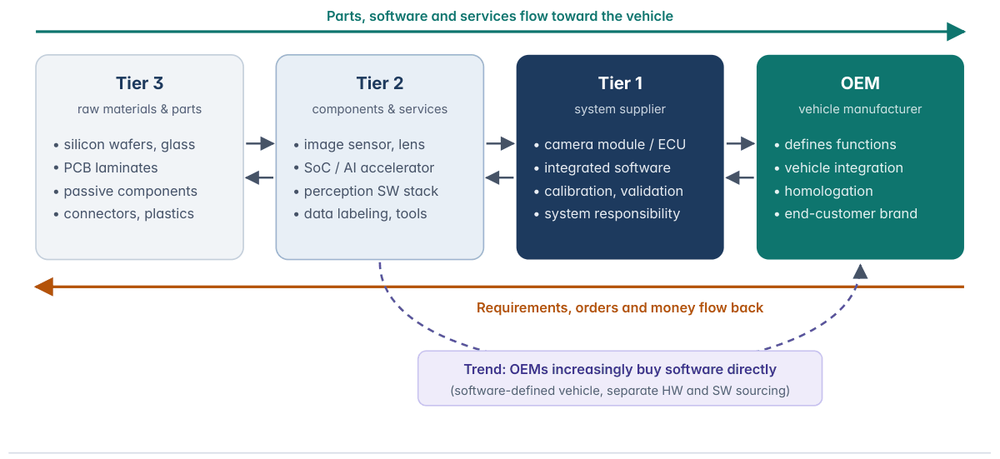
1.1Where a computer vision team sits
Computer vision engineers can be found at almost every level. At an OEM they specify functions, integrate and validate; at a Tier 1 they develop the perception software running in the camera ECU; at a Tier 2 they build reusable perception stacks, toolchains or SoC reference software; at engineering service providers they work on contract for any of the above. The important insight is that the same commercial process repeats at every link. A Tier 1 answering an OEM’s RFQ will at the same time send its own RFQs to sensor, SoC and labeling suppliers, because its price to the OEM depends on their prices.
The chain is also changing. With the software-defined vehicle, OEMs increasingly run perception on a central computer instead of inside a smart camera. They may buy the camera hardware from one supplier, the SoC from another and the perception software from a third — a model often called decoupled or split sourcing. For a computer vision team this means you may receive “software-only RFQs”, where integration, compute budget and interface responsibilities are much less obvious than in the classic smart-camera business. We return to this in Chapter 14.
Knowing your position in the chain tells you who your customer is, who carries system responsibility, which requirements are “passed down” from above, and which of your own costs depend on suppliers below you. When a customer says “this comes from Euro NCAP” or “our SoC vendor cannot confirm this”, you immediately know where in the chain the constraint originates.
For the AutoCo front camera, VisionTech is the Tier 1. Its piece price will include the image sensor from a Tier 2 sensor maker, the SoC from a chip vendor, and labeling services for the training data. Before VisionTech can promise AutoCo a price, it must get binding quotes from those Tier 2 suppliers — a second, smaller RFQ cycle running in parallel.
2The big picture: from idea to series production Overview
Every automotive sourcing project follows the same arc: the customer first learns what is possible, then asks for binding offers, then picks a supplier, then formalises the deal in contracts and orders, and only then does development and delivery begin. Remember the sequence and everything else falls into place.
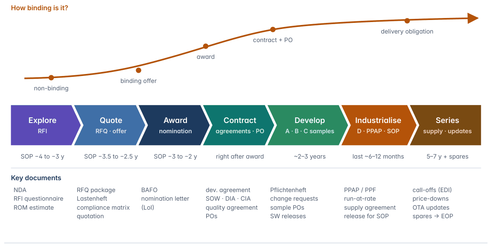
2.1The story in plain words
Around four years before a new vehicle reaches the market, the OEM knows roughly which functions it wants but not yet who should supply them or what they will cost. It sends an RFI to a broad set of suppliers to find out what technology exists, who is capable, and roughly what it might cost. Based on the answers it sharpens its requirements into a formal specification and sends an RFQ to a smaller group. Each supplier responds with a proposal: a technical concept, a statement of compliance against every requirement, and a quotation with prices. Then comes a period of clarifications, workshops and negotiation rounds, often ending with a “best and final offer”.
The OEM then makes its sourcing decision and sends the winner a nomination letter — the business award. The award is quickly followed by contracts (development agreement, statement of work, safety and security interface agreements, quality agreement) and purchase orders that legally authorise and pay for specific work: development, prototype samples, tooling. Development runs through several sample phases, each a little closer to the final product, with change requests handling everything the customer adds or alters along the way. Finally the supplier proves that its production process works (PPAP), the vehicle goes into Start of Production (SOP), and the supplier delivers against series orders for years — with annual price reductions, software updates and, after end of production, spare parts.
Each stage reduces uncertainty before the next, more expensive commitment is made. Asking twelve suppliers for detailed binding quotes would waste enormous effort on both sides, so the RFI filters first. Signing a contract before comparing offers would weaken the customer’s position, so the RFQ comes first. Starting development before a PO exists would expose the supplier to unpaid work, so the PO comes first. The order of steps protects both parties.
2.2Binding or not? The single most useful question
A good mental shortcut: whenever you hold a document, ask how binding it is and for whom. An RFI answer binds nobody — but it shapes expectations. A quotation binds the supplier: if the customer accepts within the validity period, the supplier must deliver at that price. A nomination is a strong commitment of intent from the customer but usually does not guarantee volumes. A purchase order, once confirmed, is a legal contract for exactly what it describes. A series supply agreement creates long-term delivery obligations. Mixing these up is the root of many painful surprises: engineers start work on a “nomination” without a PO, or managers treat forecast volumes as guaranteed revenue.
“The automotive sourcing process is a staircase of commitment. RFI is market exploration, RFQ is a binding price competition, nomination is the award, and the purchase order is the legal trigger for work and payment. Everything after that is about delivering what we promised — and formally handling everything that changes.”
3RFI — Request for Information Explore
An RFI is the customer saying: “We are planning something. Tell us who you are, what you can do, and roughly what it would take.” It is non-binding for both sides — yet it decides who gets invited to the real competition.
3.1What it is
A Request for Information is a structured questionnaire that a buyer sends to a broad group of potential suppliers early in a project. It typically arrives as a set of documents or a form in the customer’s supplier portal, with a deadline of a few weeks. The questions fall into three groups. First, who you are: company size, financial stability, development and production locations, certifications (IATF 16949, TISAX label, ASPICE assessment results), reference projects. Second, what you can do: your technology, your roadmap, your proposed approach to the customer’s problem. Third, what it might cost and how long it might take: a rough order of magnitude (ROM) for piece price and development cost, and a feasibility statement on the target timeline.
At this point the customer does not yet know enough to write a precise specification. The RFI helps it (1) scan the market for technologies and suppliers, (2) pre-qualify suppliers and shrink a long list to a short list, (3) collect budget numbers to get internal funding approved for the vehicle project, and (4) sharpen its own requirements — good RFI answers often influence what ends up in the RFQ specification.
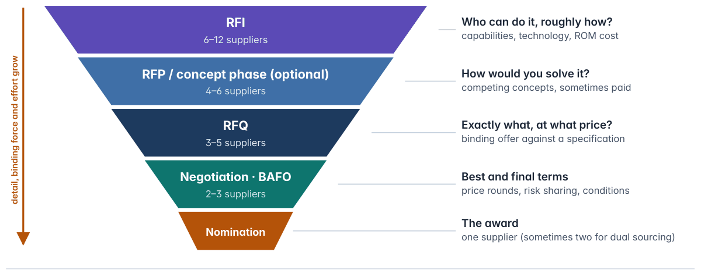
3.2RFI, RFP and RFQ — what is the difference?
The three terms describe how much the buyer already knows. In an RFI the buyer is exploring and asks for information. In an RFP (Request for Proposal) the buyer knows the problem but wants suppliers to propose how to solve it; offers are compared on approach as much as price. In an RFQ (Request for Quotation) the requirements are specified and suppliers are mainly compared on price, compliance and risk. In the automotive world the terms are used loosely: many OEMs go straight from RFI to RFQ, and the RFQ itself contains a large technical concept section, so in practice an automotive RFQ is often an RFP and RFQ in one. For complex innovations some OEMs also run a concept competition or a paid pre-development (Vorentwicklung) contract with two or three suppliers before the RFQ.
3.3What you do as a supplier
- Answer — and answer on time. Suppliers who skip or delay RFIs rarely get the RFQ. The RFI is a door-opener.
- Make sure an NDA is in place before you share roadmaps, benchmark results or architecture details.
- Show differentiation, not a catalogue. Explain what is special about your perception approach — e.g. performance at night, small-object range, compute efficiency — with evidence such as benchmark KPIs or demo videos.
- Give ROM numbers as ranges with assumptions (“piece price 95–120 € at 300–500k units/year, assuming SoC class X”). Ranges protect you; single numbers become anchors.
- Ask questions back. Clarification questions show competence and help steer the later specification in a direction you can meet.
AutoCo sends an RFI titled “Front camera for 2029 platform” to nine suppliers. It asks for proposed resolution and field of view, SoC options, supported functions (AEB pedestrian and cyclist, lane keeping, traffic sign recognition, high-beam assist), a development timeline and a ROM price. VisionTech’s CV team supplies the technical part: an 8-megapixel imager with 120° field of view, two SoC options with their compute budgets, detection-range benchmarks measured on its own test fleet with the measurement conditions clearly stated, and a statement that SOP 2029 is feasible if nomination happens by mid-2026.
“Non-binding” does not mean “without consequence”. An overly optimistic ROM price or KPI in the RFI becomes the customer’s reference point — if your RFQ price later comes in 30 % higher, you have to explain why. Likewise, a capability you claim in the RFI may be written straight into the RFQ specification as a requirement.
“An RFI is the customer’s market scan. It is non-binding for both sides, but it shapes the short list and often the specification itself — so we treat it as the first step of the sales process, not as paperwork.”
4RFQ — Request for Quotation Quote
An RFQ is the formal invitation to submit a binding offer against a defined set of requirements, volumes, timelines and conditions. It is the moment where marketing claims turn into commitments.
4.1What it is and why it exists
Where the RFI asked open questions, the RFQ gives precise ones: this is what we need, in these volumes, by this date, under these conditions — what will you charge and do you comply? The customer sends exactly the same package to every invited supplier so that the answers can be compared “apples to apples”. The RFQ is usually managed by the customer’s purchasing department, with technical departments responsible for the specification content.
The RFQ creates fair competition on a common basis, forces suppliers to commit to price, timing and requirement compliance, and produces the documents that later become the basis of the contract. Whatever you quote and accept in the RFQ is what you will be held to later — this is why an RFQ deserves careful engineering attention, not just a sales effort.
4.2What is inside an RFQ package
A complex ECU RFQ easily comprises dozens of documents and thousands of requirements. They can be grouped into three families:
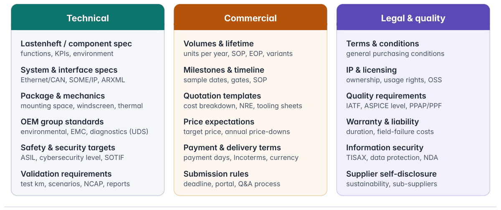
4.3How a response is organised
A typical RFQ gives four to eight weeks to respond. That sounds generous until you realise how many people must contribute: system architects, perception engineers, hardware, software platform, safety, cybersecurity, validation, quality, cost engineering, purchasing (for your own sub-supplier quotes), sales and management. A well-run response follows a predictable rhythm:
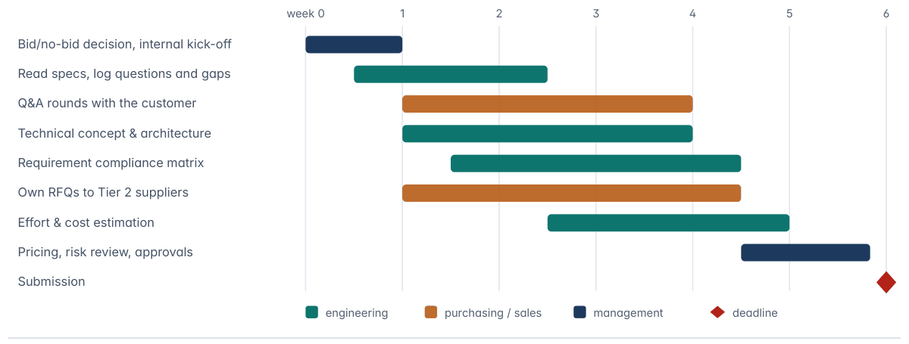
Two items deserve emphasis. The Q&A rounds are your one chance to clarify ambiguous requirements before you commit; customers usually collect questions until a cut-off date and then answer all suppliers at once, so that nobody gets an information advantage. And the approval step at the end is not a formality: in most companies quotations above a certain value need sign-off from senior management or a bid committee, which looks at margin, risk and strategic fit. Plan for it — a quote that is technically ready one hour before the deadline but not approved cannot be submitted.
- Read the specification end to end, not just “your” chapter; cross-references between documents hide the nastiest requirements.
- Rate every requirement in your area (see Chapter 5) and log unclear ones as questions with a proposed interpretation.
- Check feasibility against the compute budget: can the networks run at the required frame rate and latency on the proposed SoC, with margin for future features?
- Break your work into work packages and estimate effort, data needs (recording km, labeled frames) and test effort.
- Write down every assumption you made — it will become part of the offer.
- Drive the bid/no-bid decision early and assign a single RFQ owner and clear contributors.
- Make sure the technical concept, the effort estimate and the price tell the same story.
- Identify the top risks and decide which are priced in (contingency), which are excluded, and which are accepted.
- Reserve time for internal approvals and for the customer’s follow-up questions after submission.
AutoCo’s RFQ arrives with a 1,400-requirement Lastenheft, volumes of about 400,000 cameras per year over six years, SOP in Q3 2029, ASIL B for the emergency braking path, Automotive SPICE capability level 2 and a six-week deadline. The VisionTech CV team owns about 350 perception requirements, the effort estimate for algorithm development and validation, and the data plan. In parallel, VisionTech purchasing sends its own RFQs to two image-sensor makers, two SoC vendors and three labeling companies.
5Requirements: Lastenheft, Pflichtenheft, compliance matrix Quote
Requirements are the heart of every automotive deal. The customer describes what it needs; the supplier states, requirement by requirement, whether and how it will meet it. That statement becomes a contractual promise.
5.1Lastenheft and Pflichtenheft
The German terms are widely used, even in English-speaking automotive projects, because they capture a clear split of responsibility. The Lastenheft (customer requirement specification, sometimes called component requirement specification or statement of requirements) is written by the customer and describes what is needed and why: functions, performance targets, interfaces, environmental conditions, safety goals, standards to follow. The Pflichtenheft (supplier specification or requirements response) is written by the supplier and describes how it will fulfil the Lastenheft: architecture, design decisions, the concrete solution. A first version is often expected with the RFQ answer; the detailed version is created after nomination and becomes the agreed technical baseline.
Large requirement sets are managed in requirement-management tools such as IBM DOORS, Polarion or codebeamer, and exchanged between companies in the ReqIF format. That allows each requirement to keep a stable ID, a version and a supplier status that both sides can trace.
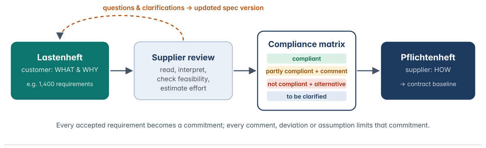
5.2The compliance matrix — your most important RFQ document
The compliance matrix (also called requirement compliance statement or “Stellungnahme”) lists every requirement ID with the supplier’s status and comment. It looks like administrative work, but it is arguably the single most consequential document an engineer contributes to: in most OEM contracts, the Lastenheft together with the supplier’s comments is attached to the development agreement. A requirement marked “compliant” without comment is a promise to deliver exactly what is written — in whatever way the customer chooses to interpret it later.
| ID | Requirement (customer) | Status | Supplier comment |
|---|---|---|---|
| FC-0412 | The system shall detect pedestrians at a distance of at least 80 m. | Partly | Compliant for adult pedestrians ≥ 1.5 m height, daylight (> 1,000 lux), unoccluded, dry road; 60 m at night with low-beam illumination. KPI measured per track on agreed validation dataset. |
| FC-0418 | Object list output latency shall not exceed 50 ms. | Compliant | Measured from end of image exposure to object list on the Ethernet interface, at 30 fps. |
| FC-0533 | The system shall recognise all traffic signs valid in the EU. | Clarify | Please provide the list of sign classes and target countries. Our offer covers the sign catalogue in Annex T-3 (EU-27 + UK, CH, NO). |
| FC-0620 | Training data shall be collected in all sales markets. | Not compliant | Offer includes data collection in EU and US. Additional markets (CN, KR, JP) can be offered as an option — see commercial annex. |
| FC-0701 | Camera shall operate between −40 °C and +85 °C. | Compliant | Full function −40 °C to +85 °C ambient; above +85 °C (soak behind windscreen) degraded mode per concept doc §4.2. |
Notice how much the comments do. A bare “80 m pedestrian detection” is meaningless for a computer vision engineer: what size of pedestrian, which lighting, which weather, what occlusion, per frame or per track, which precision at that recall, measured on which dataset? The customer may have one interpretation, you another. The comment fixes the interpretation before it becomes a dispute.
- Never mark a vague performance requirement “compliant” without stating the conditions under which it is met and how it is measured.
- Use “partly compliant” and “not compliant” honestly — and always offer an alternative or an option. Customers respect a clear deviation more than a hidden one.
- Record the specification version and date you assessed. When the customer issues a new version, run a delta analysis.
- Keep comments short, technical and unambiguous; avoid “we will try” or “as far as possible”.
Hundreds of requirements marked “compliant” in a rush the night before submission are a classic source of later losses. Every unchecked “compliant” is an unpriced promise. If time is short, it is better to mark a requirement “to be clarified” and list it as an assumption than to accept it blindly.
“The Lastenheft says what you need; our Pflichtenheft says how we will deliver it. The compliance matrix connects the two — it is our requirement-by-requirement commitment, so we make sure every KPI has a clear measurement condition before we sign up to it.”
6The proposal: technical offer and commercial quotation Quote
The answer to an RFQ has two halves. The technical offer convinces the customer that you can do it; the commercial quotation tells them what it costs. Both must tell the same story — and both are bound by the assumptions you write next to them.
6.1Two halves of one offer
In automotive, the words proposal, offer and quotation are often used interchangeably. It helps to think of the response as a technical offer (evaluated by the customer’s engineering departments) and a commercial quotation (evaluated by purchasing). Many OEMs even require them to be submitted separately, so that engineers rank the solutions without seeing the prices.
- Solution concept: system architecture, HW/SW split, image sensor, optics, SoC, perception approach
- Compliance matrix with comments, deviations and alternatives
- Development plan: milestones, sample phases, software release plan
- Validation strategy: data collection, simulation, test drives, KPIs
- Safety & security concept: ASIL decomposition, cybersecurity approach
- Organisation: team, locations, responsibilities, references
- Risks and mitigations
- Piece price per unit, often per variant and per volume band
- NRE / development cost (one-time engineering), split by milestones
- Tooling and test equipment (e.g. end-of-line calibration stations)
- Prototype sample prices for A/B/C samples
- Software licences, royalties, maintenance and update fees
- Price-down schedule, validity of the offer, payment terms, currency or raw-material clauses
- Cost breakdown in the customer’s template (see Chapter 7)
Shared by both halves: assumptions, exclusions, dependencies on the customer, and the specification version the offer is based on.
6.2What the customer sees — and what really decides profit
Purchasing departments compare suppliers first on piece price, because it is multiplied by millions of units. But for an engineering-heavy product like a camera with perception software, a large part of the economic reality sits below the waterline: the cost of development, data, validation, software maintenance over many years, warranty exposure and the annual price reductions the customer expects. A supplier who prices only what is visible wins the business and loses money.
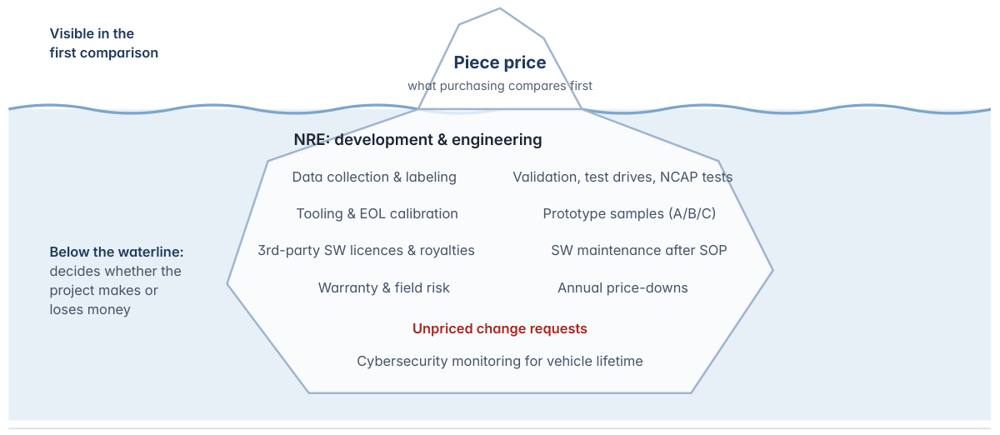
6.3Assumptions and exclusions: your protective layer
No supplier can fully specify a three-year development project in six weeks. The gap is closed by assumptions (what you take as given) and exclusions (what is not part of the offer). They are the most important protective tool you have: when the customer later asks for something outside them, the assumption list is what turns a dispute into a change request. Good assumptions are specific and checkable. Compare “customer will support data collection” (useless) with the examples below.
- Offer based on Lastenheft v1.3 of 12 March and interface specification v0.9; later versions subject to delta analysis.
- Customer provides two instrumented test vehicles from B-sample onwards and access to its proving ground for 20 days per year.
- Labeling of up to 1.5 million frames included; additional labeling quoted at a fixed rate per frame.
- Reference ground truth (e.g. lidar-equipped vehicle) provided by the customer for KPI validation.
- Piece price based on 400,000 units/year; below 300,000 units/year the price will be re-quoted.
- SoC price based on the vendor’s quotation of 2 April; changes in semiconductor prices will be passed through.
- Excluded: homologation testing outside the EU, data collection in China, functions not listed in Annex F-1.
6.4Validity, clarification and re-quotes
A quotation is normally a binding offer for a defined validity period, often 90 to 180 days. If the customer accepts within that period, you are bound. After submission come technical clarification meetings, where the customer’s engineers test whether you really understood the requirements, and commercial rounds, where purchasing asks for a revised quotation — often several times. Every re-quote must keep technical content and price consistent: if the price drops, explain what changed (for example a lower-cost SoC variant or reduced validation scope), or you are simply giving away margin.
The technical team proposes an ambitious solution while sales quotes a price calculated for a simpler one. The customer nominates you for the ambitious solution at the low price. Always reconcile concept, effort estimate, assumptions and price before submission — one owner should be able to explain how each euro of NRE maps to work in the plan.
“Our offer has a technical and a commercial part, tied together by a clear list of assumptions. The piece price covers series production; development, validation and data work are quoted separately so you can see exactly what you are paying for — and anything outside these assumptions we would handle as a change request.”
7Costing made simple Quote
You do not need to be a cost engineer to understand an automotive quotation. Three ideas carry most of the weight: what makes up the piece price, how one-time development cost is paid, and how volume and time turn small numbers into very large ones.
7.1What is inside the piece price
The piece price is what the customer pays for each camera delivered in series production. It is built up from the bill of materials (BOM: image sensor, lens, SoC, memory, PCB, housing, connector), the manufacturing cost (assembly, active lens alignment, end-of-line calibration and testing), provisions for scrap and warranty, logistics and packaging, a share of the company’s overheads, and finally the profit margin. Some suppliers also spread part of the development or tooling cost across the first years of units — called amortisation.
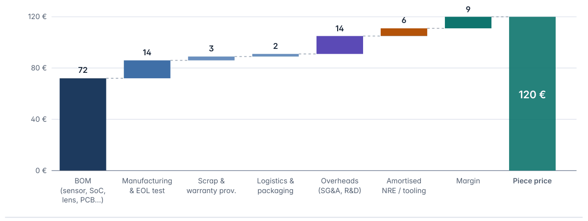
7.2One-time costs: NRE, tooling and how they are paid
NRE (non-recurring engineering) — also called ED&D (engineering, design and development) or simply development cost — is the one-time effort to develop the product: requirements, algorithm and software development, data, integration, safety and security work, validation, project management. Tooling covers production tools and dedicated test equipment. There are two basic ways to get paid for them. The customer can pay them separately, usually in milestone instalments tied to sample phases. Or they can be amortised into the piece price over a defined number of units or years. Amortisation lowers the visible NRE figure but shifts risk to the supplier: if the vehicle sells fewer units than forecast, the development cost is never fully recovered. That is why amortised offers contain volume clauses, and why many suppliers prefer separate payment for engineering-heavy products.
7.3Software changes the pricing model
Traditional hardware pricing — one piece price — fits poorly with software that evolves after SOP. Perception software is therefore increasingly priced with its own elements: a development NRE; a licence fee or royalty per unit (for the supplier’s reusable stack or third-party components); an annual maintenance fee for bug fixes, security patches and retraining; and sometimes feature-based pricing, where new functions delivered over the air are paid when activated. Engineering services on a time-and-materials (T&M) basis — hours × rate, often with a cap — are common for open-ended work such as customer-specific integration support.
7.4Volume × price × years: why small numbers matter
Automotive customers expect annual price reductions (also called productivity or LTA price-downs), commonly in the range of one to three percent per year, on the logic that suppliers become more efficient over time. Combined with multi-year volumes, the result is a lifetime revenue far larger than intuition suggests — and a lifetime sensitivity to every euro of piece price.
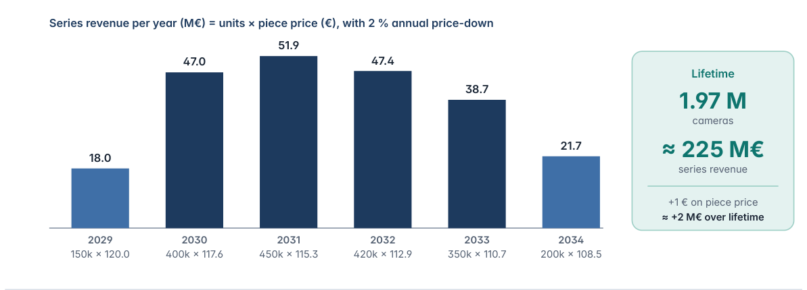
7.5Effort estimation for computer vision work
The NRE figure is built from an effort estimate, and that estimate typically comes from engineers. For perception projects, the work splits roughly as below. The exact shares vary widely, but the pattern is consistent: newcomers underestimate data and validation, and overestimate how much of the effort is “building the network”.
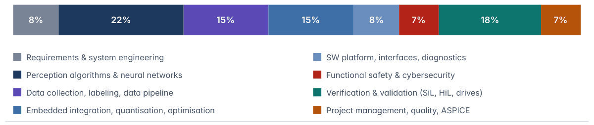
Three estimation techniques are worth knowing. Analogy scales the actuals of a comparable past project (“the last traffic-sign function took 14 person-years; this one has twice the classes but reuses the pipeline”). Bottom-up estimation breaks the work into a work breakdown structure and estimates each package. Three- point estimation asks for an optimistic (O), most likely (M) and pessimistic (P) value per package and combines them as (O + 4M + P) / 6 — a package with 6, 9 and 18 person-months gives 10 person-months, quietly pulling the estimate towards the risk. On top, a risk contingency is added for identified risks. Estimates are then converted into money with internal hourly rates that include overheads.
- Estimate in effort (person-months) and in physical drivers: recording hours or km, labeled frames, test-drive days, HiL rigs, GPU hours for training.
- Separate what scales with scope (number of classes, countries, variants) from what is fixed — it makes later change requests easy to price.
- State your confidence and your top three risks next to every estimate.
“Our quotation separates the one-time development cost from the series piece price. The piece price is mostly hardware; the development cost is driven by data, validation and safety work — that is where computer vision projects really spend their effort.”
8Negotiation, sourcing decision and nomination Award
After submission, the customer tests, compares and negotiates — then awards the business with a nomination letter. The nomination is the moment everyone celebrates, but it is worth knowing exactly what it does and does not promise.
8.1From submission to decision
Once the offers are in, two evaluations run in parallel. The customer’s engineers hold technical clarification meetings and workshops with each supplier: walking through the concept, challenging compliance statements, sometimes asking for live demos or test-drive data. Out of this comes a technical ranking or a list of suppliers that are “technically released”. Meanwhile purchasing runs commercial rounds, asking for revised prices, often against a target price the OEM has calculated itself (“should-cost”). The final round is frequently a BAFO — best and final offer. The decision is then taken by a sourcing committee (in German companies often called “Vergabegremium”), where purchasing, engineering, quality and finance weigh the options.
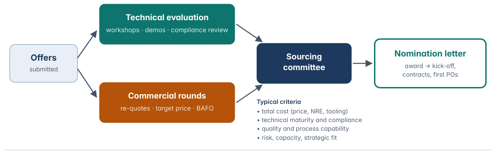
8.2What a nomination letter says
The nomination letter (Letter of Nomination, LoN; in German “Nominierungsschreiben” or “Vergabeschreiben”) is the customer’s formal statement that it has selected you. It usually references the project and part numbers, the quotation it is based on, prices, SOP date and estimated volumes, and lists conditions and next steps. Sometimes an earlier, softer Letter of Intent (LoI) is issued when the decision is made but the details are still being finalised.
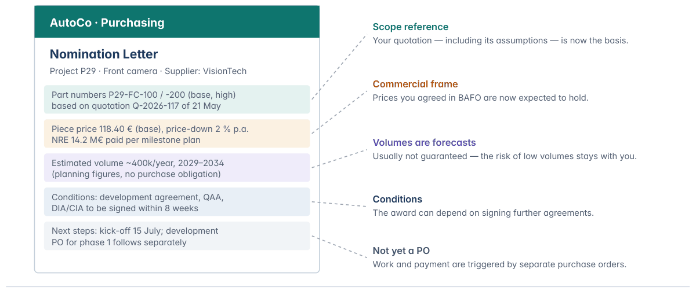
Between the decision and fully signed contracts there can be weeks or months — but development has to start immediately to hold SOP. The nomination gives the supplier enough security to staff a team, reserve capacity and place its own orders with sub-suppliers, while the detailed legal documents are completed.
A nomination is not a purchase order and, in most cases, not a volume guarantee. Treat “we are nominated” as “we have won the right to sign contracts and receive orders” — and check whether any paid work is authorised before you start. Also note that the nomination freezes your commercial position: arguments you did not make before the award are much harder to make afterwards.
“The nomination is the business award: AutoCo has selected us for the front camera based on our quotation. It starts the project, but the legal obligations come with the development agreement and the purchase orders that follow.”
9Contracts and agreements Contract
Behind every automotive project sits a stack of agreements, each settling one kind of question: confidentiality, scope, responsibilities, safety, security, quality, delivery. You do not need to write them, but you need to know which one answers which question.
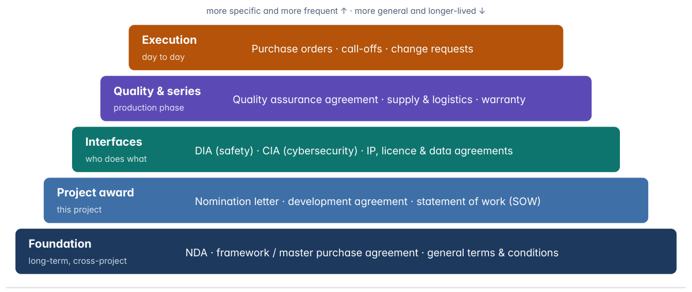
9.1The agreements one by one
| Agreement | What it settles | Why a CV team should care |
|---|---|---|
| NDA non-disclosure agreement | What confidential information may be shared, for what purpose, how long it stays confidential. | Must be signed before you share benchmarks, data samples, architecture or roadmaps. |
| Framework / master agreement Rahmenvertrag | General rules for all business between two companies: liability, payment terms, IP basics, governing law. | Defines default rules on IP and liability that your project inherits. |
| Development agreement Entwicklungsvertrag | Scope of the development, deliverables, milestones, NRE payment, acceptance, IP ownership of results. | Decides who owns trained models, tools and data produced in the project. |
| SOW statement of work | The concrete work: work packages, deliverables, acceptance criteria, schedule, responsibilities. | The document you will actually work against day to day — know it well. |
| DIA development interface agreement | Required by ISO 26262 for distributed safety development: who performs, approves, supports each safety activity and work product (RASIC table), safety contacts, exchange of work products. | Defines whether you or the OEM own the safety analysis of perception, the safety requirements, and evidence like the safety case. |
| CIA cybersecurity interface agreement | The cybersecurity counterpart under ISO/SAE 21434: responsibilities for TARA, security requirements, vulnerability handling. | Covers secure boot, model integrity, update security and incident response obligations after SOP. |
| IP, licence & data agreements | Usage rights for software, third-party and open-source components; rights to recorded data; data-protection terms (e.g. under GDPR). | Camera recordings contain faces and licence plates; reusing them for other customers may be prohibited. |
| Quality assurance agreement QAA / QSV | Quality processes, PPAP/PPF requirements, problem-solving (8D), audit rights, field-failure handling. | Sets how software defects are reported, analysed and fixed after SOP. |
| Supply & logistics agreement | Series delivery obligations, call-off process, packaging, delivery reliability, spare-part supply after EOP. | Mostly operations, but it fixes how long the product — and its software — must be supported. |
| Warranty agreement | Warranty duration and how field-failure costs (including recalls) are shared. | A systematic perception weakness found in the field can trigger very large claims. |
9.2Background and foreground IP
Intellectual property is often the hardest point to negotiate in computer vision contracts. Background IP is what each party brings into the project — your existing perception stack, tools, pre-trained networks, datasets. Foreground IP is what is created during the project. Customers who pay the NRE often want to own the foreground; suppliers want to keep their background and the right to reuse generic improvements. Typical compromises are: the supplier keeps background IP and grants a licence; customer-specific results belong to the customer; generic improvements stay with the supplier. For machine learning, define explicitly how this applies to trained weights, training data and labels — they are neither classic code nor classic hardware.
“The development agreement and SOW define what we build and how it is paid; the DIA and CIA define who is responsible for safety and security activities; the quality agreement defines how we handle problems once the product is on the road.”
10PO — Purchase Order Contract
A purchase order is the customer’s formal, legally binding order for a specific thing, in a specific quantity, at a specific price, by a specific date. It is the document that turns intention into obligation — and into money.
10.1What it is and why “no PO, no work”
A PO (in German “Bestellung”) is issued by the buyer’s purchasing system and states what is ordered, the quantity or scope, the price, the delivery date or milestones, and the applicable terms. Once the supplier confirms it (order confirmation), a contract exists for exactly that content. For the supplier, the PO is the authorisation to spend money on the customer’s behalf and the reference for every invoice: without a PO number, most customers’ accounting systems simply cannot pay an invoice. That is the reason behind the familiar rule “no PO, no work”. Work done before a PO exists is done at your own risk — if the customer changes its mind, nobody pays for it.
For the customer, the PO enforces internal control: budgets are checked, approvals are documented, and nobody can commit company money informally. For the supplier, it creates legal certainty about scope and payment. For both, it creates a precise reference that deliveries, acceptance and invoices can be matched against.
10.2One nomination, many purchase orders
A large project is not paid through one PO. The nomination opens the door, and then different kinds of orders cover different kinds of work over the years:
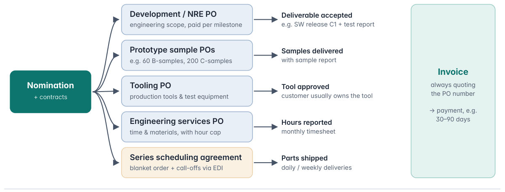
Development POs are usually split into milestones linked to sample phases or software releases; each milestone is invoiced only after the customer accepts the deliverable, which is why acceptance criteria in the SOW matter so much. Sample POs order a specific number of prototypes. Tooling POs pay for production tools, which typically become the customer’s property while staying at the supplier’s plant. Engineering- services POs cover open-ended work on a time-and-materials basis up to a cap. In series production, a scheduling agreement (blanket order) fixes price and terms, while the actual quantities are released through frequent call-offs sent electronically (EDI) — so the supplier’s plant produces exactly what the vehicle plant needs.
10.3The order-to-cash cycle
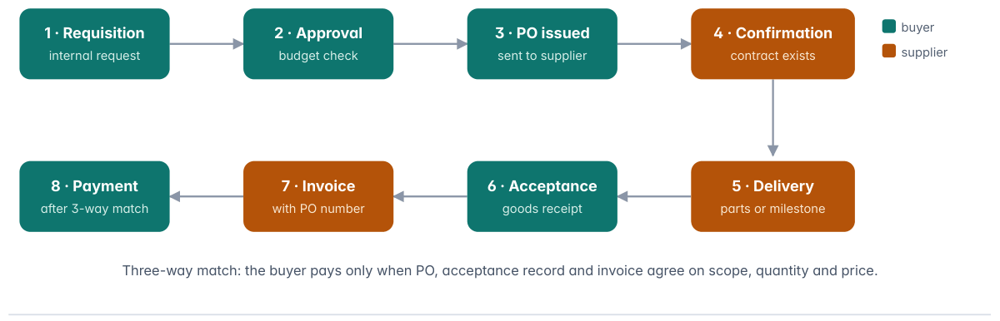
The same cycle runs inside your own company whenever your team buys something — a labeling service, GPU cloud capacity, a test vehicle rental, a camera evaluation kit. There you are on the buyer’s side: you raise a purchase requisition (PR), it is approved against your budget, and purchasing turns it into a PO to the vendor. If your project depends on external services, starting the requisition early is one of the most effective ways to avoid delays.
- Know which PO your work is booked against and what scope it covers. If a task is not covered, raise it before doing it.
- Make milestone deliverables easy to accept: a clear release note, test evidence mapped to the acceptance criteria in the SOW.
- Managers: track hours and cost against each PO; a PO budget exhausted at 70 % of the work is a change-request conversation, not a surprise for month-end.
Two weeks after nomination, AutoCo’s engineers ask VisionTech for an extra analysis of night-time performance with a new windscreen. It sounds small, but no PO covers it yet. The VisionTech project lead agrees to the analysis in principle, sends a short offer (12 person-days) the same day and starts once the PO arrives — friendly, fast and covered.
“The nomination tells us we have won; the purchase order tells us exactly what to deliver and what we will be paid. We start work as soon as the PO is in place — and if timing is critical, we can agree on a short-term PO for the first phase.”
11Change requests and scope control Develop
In a three-year development, requirements will change — new NCAP protocols, a different windscreen, an extra function marketing wants. Change management is how both sides keep the deal fair when that happens.
11.1Why change management exists
Your quotation priced a specific scope: a specification version, a list of functions, a set of assumptions. When the scope grows without a formal process, the extra work is done but never paid — a phenomenon called scope creep. On a long project, dozens of “small” additions can consume the entire margin. A change request (CR) is the formal mechanism that compares the new wish against the agreed baseline, makes its impact visible, and gets it decided and paid before it is implemented. It protects the customer too: it makes the consequences of a change on timing, quality and safety explicit before anyone commits.
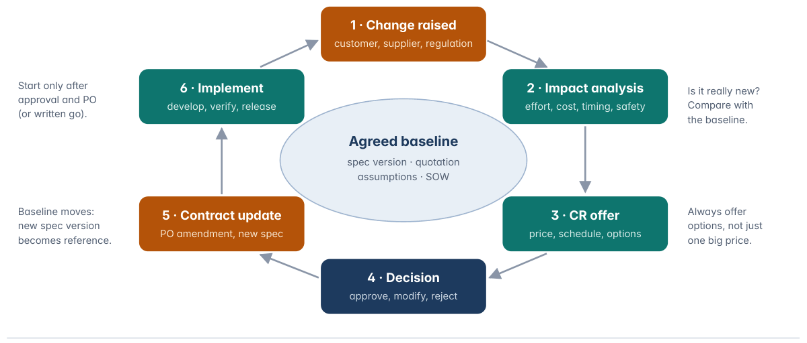
11.2Where changes come from
Changes come from three directions. The customer adds or alters requirements — a new function, a new market, a different vehicle variant. The supplier proposes changes — a newer SoC generation, a cost-reduction idea, a better architecture. And the outside world forces changes — an updated Euro NCAP protocol, a new regulation, an end-of-life notice for a component, a cybersecurity vulnerability. All three should go through the same process, because all three affect cost, timing or risk. After SOP the same idea continues under the name engineering change (ECR — engineering change request, ECN — engineering change notice), and product changes in series usually require the customer’s approval and often a renewed PPAP submission.
11.3A good impact analysis for a perception change
For computer vision work, the impact of a change is often bigger than it first looks. Adding a new object class affects data collection, labeling, network architecture, compute budget, safety analysis, validation and possibly memory and latency on the target. A good impact analysis lists each of these explicitly, gives effort and cost per item, states the effect on the release plan, and — very helpful for the customer — offers options: “full scope in release C2”, “reduced scope with existing data in C1”, or “after SOP via software update”.
Twelve months into development, AutoCo asks VisionTech to add construction-zone detection because a new rating protocol rewards it. The Lastenheft version VisionTech quoted against does not contain it. VisionTech’s impact analysis lists 400 hours of additional recordings, 300,000 additional labeled frames, network changes with a 6 % increase in compute load, an update of the SOTIF analysis and two extra validation loops — 1.1 M€ and three months. It offers two options: full scope in the C-sample, or a reduced version in the C-sample and full scope by OTA update six months after SOP. AutoCo chooses option two; the PO is amended and the Lastenheft updated to version 2.1.
- Always know your baseline: which specification version, which assumptions and which SOW your work is based on.
- When a new wish appears in a meeting, acknowledge it positively and say you will assess the impact — do not accept or refuse on the spot.
- Keep a change log, including small changes done as goodwill. Visible goodwill builds relationships and is useful in later negotiations; invisible goodwill is just lost money.
The most expensive changes are the ones nobody calls a change: “just a small clarification of the requirement”, “just one more test scenario”, “just a quick analysis for the steering committee”. Each one is reasonable; together they can cost more than a large, formally requested feature.
“That sounds like a good addition. It is outside our current baseline, so let us do a quick impact analysis — we will come back with the effect on effort, timing and safety, and a couple of options for how to fit it in.”
12From development to SOP Develop & industrialise
Development in automotive does not move in one straight line towards a final product. It moves through a series of prototype generations, each closer to series production, checked at maturity gates — until the supplier proves that its process can deliver at volume and the vehicle starts production.
12.1Sample phases: A, B, C, D
The sample phases structure the hardware and software maturity of the product and are the anchor for most milestones, deliveries and payments. The exact definitions differ from OEM to OEM, but the logic is common:
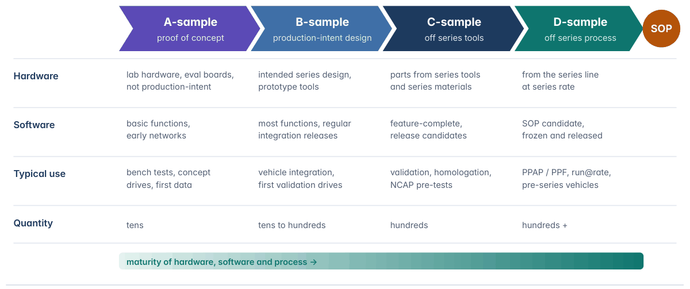
12.2Maturity gates and quality planning
Throughout development, OEM and supplier check progress at gates or milestones — design freeze, software freeze, release for production. Most of the industry structures this with APQP (Advanced Product Quality Planning), and in Germany the VDA’s Maturity Level Assurance (MLA) defines a common set of maturity levels from innovation release to the start of series production. The idea is simple: problems found early are cheap, problems found at SOP are catastrophic, so maturity is measured continuously instead of hoped for at the end. For software, the customer also checks process quality, typically through Automotive SPICE assessments of the supplier’s development process.
12.3PPAP / PPF: proving the series process
Before series deliveries may begin, the supplier must demonstrate that its production process reliably makes parts that meet all requirements, at the required rate. Internationally this is the Production Part Approval Process (PPAP) defined by the AIAG; German OEMs commonly use the VDA equivalent, PPF (Produktionsprozess- und Produktfreigabe). The submission bundles evidence such as dimensional and functional test results, process flow and control plans, process FMEA, capability studies, material data, and — for software-heavy products — the released software version with its test and validation evidence. A run@rate (or run-at-rate) proves capacity by running the line at the planned output. Approval of the submission is the formal release for series delivery.
12.4SOP and life after SOP
SOP (start of production) is the day the vehicle plant begins building cars for customers; volumes then ramp up over several weeks or months. For hardware suppliers, SOP used to be the end of development. For perception software it is increasingly a midpoint: field monitoring, bug fixes, retraining to fix weaknesses found on the road, new features delivered over the air, and cybersecurity monitoring and patching for the lifetime of the vehicle type — UN R155 and R156 require OEMs to manage cybersecurity and software updates, and OEMs pass these duties to suppliers through the CIA and maintenance contracts. At EOP (end of production) series deliveries stop, but spare-part and often software-support obligations continue for many years.
- Plan software releases against sample phases and gate dates from day one; every release should have a defined scope, test evidence and release note.
- Make sure post-SOP work — retraining, updates, security patches — is either covered by a maintenance contract or explicitly excluded in your offer.
- Treat KPI evidence as a product: validation reports at C-sample and SOP are what the customer uses for homologation and NCAP.
“We move from A- to D-samples step by step, with software releases tied to each phase. Before SOP we prove our series process through PPAP, and after SOP we keep the perception software maintained and secure through updates.”
13Standards and regulations you will meet in RFQs Cross-cutting
RFQs rarely explain standards; they simply list them as requirements. Each one translates into concrete work, documents and cost. Knowing roughly what each implies lets you price it — and talk about it — with confidence.
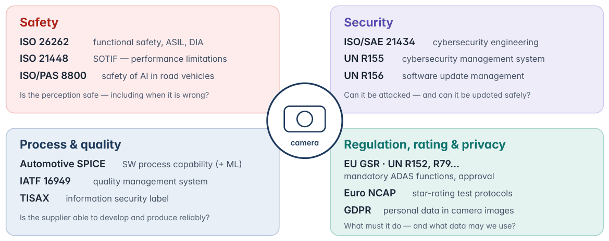
| Standard / regulation | What it is, in one sentence | What it means in your quote |
|---|---|---|
| ISO 26262 | Functional safety of E/E systems: avoiding unreasonable risk from malfunctions, graded by ASIL A–D. | Safety analyses, safety requirements, extra reviews and tests, safety case, a DIA; effort grows strongly with ASIL. |
| ISO 21448 (SOTIF) | Safety of the intended functionality: risks from performance limitations even when nothing is broken. | Central for perception: triggering-condition analysis, scenario coverage, large validation and field-monitoring effort. |
| ISO/PAS 8800 | Guidance on safety of AI/ML components in road vehicles (published 2024). | Expect requirements on data quality, dataset documentation and ML lifecycle evidence. |
| ISO/SAE 21434 | Cybersecurity engineering over the product lifecycle. | Threat analysis (TARA), security concept, secure boot and update, vulnerability monitoring after SOP, a CIA. |
| UN R155 / R156 | UNECE regulations requiring OEMs to run cybersecurity and software-update management systems for type approval. | OEM passes obligations down: evidence, incident response, update-process support for the vehicle lifetime. |
| Automotive SPICE | Assessment model for development process capability; version 4.0 adds machine-learning engineering processes. | Target capability level (often CL2) in the RFQ; costs for process work, tooling and assessments. |
| IATF 16949 | The automotive quality management standard for production sites. | Certification is usually a precondition to be invited at all. |
| TISAX | VDA information-security assessment, with labels for confidential data and prototype protection. | Needed to receive OEM confidential data and handle prototype vehicles; check which label level the RFQ requires. |
| EU GSR, UN R152, | Regulations mandating and defining ADAS | Hard functional requirements and homologation |
| R79 … | functions such as emergency braking and lane keeping. | tests; non-negotiable. |
| Euro NCAP | Consumer rating programme with regularly updated test protocols. | Not law, but commercially decisive; protocol updates are a frequent source of change requests. |
| GDPR | EU data-protection regulation; faces and licence plates in recordings are personal data. | Anonymisation, data-processing agreements, retention rules, limits on reusing data. |
“Safety standards tell us how to make the camera safe when it fails or when perception reaches its limits; security standards protect it against attacks and govern updates; process standards show we can develop reliably; and regulations and NCAP define what the functions must achieve.”
14What makes computer vision RFQs special Cross-cutting
A classic ECU RFQ is about hardware that is specified, produced and finished. Perception is different: its performance is statistical, it depends on data, it runs close to the limits of the compute platform, and it keeps evolving after SOP. These differences hide in every RFQ — and they are exactly where CV engineers add the most value to an offer.
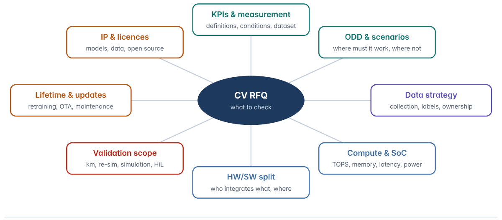
KPIs and how they are measured
Perception requirements are statistical: detection rates, false-positive rates, ranges, latencies. A KPI without a measurement definition is not a requirement but an argument waiting to happen. Agree on object definitions (size, occlusion, truncation), environmental conditions, the reference (ground truth) system, frame- or track-level evaluation, the dataset or test catalogue, and how rare events such as false emergency braking are counted — per hour, per kilometre, per million frames.
Operational design domain
The ODD describes where the function is designed to work: road types, speeds, weather, lighting, countries. A broad ODD multiplies data and validation effort. Clarify it explicitly — and state what happens outside it (graceful degradation, driver warning).
Data strategy
Who collects the data, with which vehicles and sensors, in which countries? Who labels it and to which specification? Who owns the data and the labels, and may they be reused for other customers? How is personal data handled? Data is often the largest single cost driver after people and the most frequent source of IP disputes, so it deserves its own section in the offer.
Compute budget and SoC
The SoC choice fixes the available compute, memory bandwidth and power envelope for years. Check whether the required functions fit at the required frame rate and latency with margin for features added later
— and whether the margin itself is a requirement. If the customer selects the SoC (common in central-compute architectures), make the compute budget allocated to your software an explicit assumption.
HW/SW split and integration
In software-only sourcing, responsibilities that used to be internal to the Tier 1 become interfaces between companies: middleware, scheduling, camera driver and ISP tuning, calibration, diagnostics, timing. Each must be assigned — otherwise integration issues land on whoever is least protected by the contract.
Validation scope
How many kilometres or hours of driving, which scenario catalogue, how much simulation or data re-simulation counts, who provides HiL rigs and test vehicles, and which reports are needed for homologation and NCAP. Validation is where perception projects most often overrun.
Lifetime and updates
Will the customer expect retraining after SOP, new features over the air, security patches for ten years? Each is real work and should be either priced (maintenance fee, feature fees) or excluded.
IP and licences
Clarify ownership of trained weights, training data and labels; licences of pre-trained models and open-source components (their licence terms may restrict commercial use); and what the customer may do with your software beyond the project.
Further practical items worth a line in every offer: end-of-line and online camera calibration, windscreen variants and their optical effects, heating and cleaning of the camera area, and image-quality tuning responsibilities.
“Perception performance is statistical, so we agree up front on how every KPI is measured and in which operational domain. Data, validation and post-SOP updates are major cost drivers, so our offer shows them explicitly instead of hiding them in the piece price.”
15Who does what People
An RFQ is a team sport with a dozen positions. Knowing who owns which part — on your side and on the customer’s — saves time, prevents contradictory messages and keeps you out of conversations that are not yours to have.
15.1Roles and their counterparts
| Supplier role | What they own in the sourcing process | Typical customer counterpart |
|---|---|---|
| Key account manager / sales | Customer relationship, commercial offer, negotiation, final price position. | Buyer in purchasing (Einkauf) |
| Project manager / RFQ owner | Coordinating the response, schedule, consistency of all parts; later the program manager. | Customer project lead |
| Technical lead / system architect | Solution concept, technical consistency, technical presentations. | Component owner (Bauteilverantwortlicher), system engineering |
| CV / perception engineers | Requirement assessment, feasibility, effort estimates, data and validation plans, demos. | Function developers, ADAS function owners |
| Cost engineering & controlling | Piece-price calculation, NRE, business case, cost breakdown templates. | Cost engineering (“should-cost” analysis) |
| Purchasing (your own) | Quotes from Tier 2 suppliers: sensors, SoC, labeling, test services. | — (their counterpart is your Tier 2’s sales) |
| Quality, safety & security | Quality agreement, DIA and CIA, ASPICE, safety and security concepts. | Supplier quality engineer, safety and security managers |
| Legal | Terms and conditions, IP, liability, data-protection clauses. | Legal department |
| Management / bid committee | Bid/no-bid, approval of the offer and of negotiation limits. | Sourcing committee |
15.2A responsibility matrix for an RFQ response
The matrix below uses the RASIC logic that also appears in DIAs: Responsible (does the work), Approves, Supports, Informed, Consulted. Your company’s split will differ in detail; the point is that every activity has exactly one owner and one approver.
| Activity | Sales / KAM | Project mgr | Tech lead | CV eng. | Cost eng. | Purch. | Quality / safety | Legal | Mgmt |
|---|---|---|---|---|---|---|---|---|---|
| Bid / no-bid decision | R | C | C | I | C | I | C | I | A |
| Customer communication, Q&A | A | R | S | S | I | I | I | I | I |
| Compliance matrix | I | I | A | R | I | I | S | I | I |
| Technical concept | I | I | R | S | C | I | S | I | A |
| Effort estimation | I | S | A | R | C | I | S | I | I |
| Tier 2 quotations | I | I | S | S | C | R | I | I | I |
| Piece price & NRE calculation | A | S | S | I | R | S | I | I | I |
| Assumptions & exclusions | A | R | S | S | S | I | S | C | I |
| Terms & conditions review | A | C | I | I | I | I | S | R | I |
| Price negotiation | R | C | I | I | S | I | I | I | A |
| Final offer approval | R | S | S | I | S | I | S | S | A |
In technical meetings, engineers give technical facts — not prices, discounts, delivery dates or promises of extra scope. If a customer engineer asks “would it be expensive to add X?” or “can you do this for free?”, the right answer is that you will assess it and your project or sales colleagues will come back. Customers know this rule; respecting it makes you more credible, not less.
16Playbooks for engineers and managers Practice
Knowing the process is half the job; the other half is a set of habits. This chapter collects them as short checklists you can actually use when the next RFQ lands.
16.1Bid or no-bid?
Answering a complex RFQ can cost several hundred thousand euros in internal effort. Not every RFQ deserves an answer, and a weak answer to a hopeless RFQ steals people from a winnable one. The decision weighs two things: how attractive the business is (volume, margin, strategic value, technology fit) and how likely you are to win it (relationship, technical lead, price position, incumbent advantage).
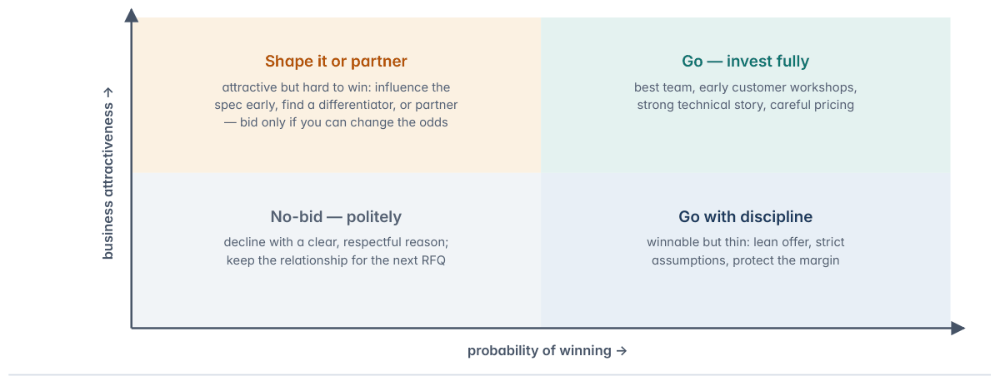
- Read the full spec, including referenced standards and annexes.
- Note the spec version and date you assessed.
- Rate every requirement; add measurement conditions to every KPI.
- Turn every ambiguity into a question with a proposed interpretation.
- Check compute, memory and latency budgets with margin.
- Estimate effort per work package with O/M/P values.
- Quantify data: hours, km, frames, countries, labels.
- Quantify validation: drives, scenarios, re-sim, HiL.
- Write down every assumption and dependency.
- Name your top three technical risks and mitigations.
- Make a deliberate bid/no-bid decision within days.
- Appoint one RFQ owner and a clear RASIC.
- Reserve the right people — the best estimate needs the best engineers.
- Align concept, effort, assumptions and price before approval.
- Decide which risks are priced, excluded or accepted.
- Check capacity: can you staff the project if you win?
- Plan approval time and post-submission clarification.
- Prepare negotiation limits before the first commercial round.
- After award: hand over assumptions to the project team.
- Win or lose: hold a short lessons-learned review.
16.2Habits that pay off during the project
Keep the offer alive. The people who wrote the offer are often not the people who execute the project. Hand over the assumptions list, the compliance comments and the effort basis explicitly at kick-off — they are the project’s protection, but only if the team knows them. Write things down. Meeting minutes, agreed interpretations and customer decisions sent by e-mail are the evidence when memories differ months later. Review the baseline regularly. A short monthly check — “what have we been asked to do that is not in our baseline?” — catches scope creep while it is still small. Close the loop. Compare actual effort with the RFQ estimate at each phase; this is the data that makes the next estimate better.
Projects rarely lose money because of one bad decision. They lose it through many small, undocumented ones. The habits above make the commercial side of a project visible to engineers early — when it is still cheap to react.
17Explaining it in a sentence Communication
You will often need to explain these concepts in a sentence — to a new colleague, in a steering committee, or across the table from a customer. Here are ready-made explanations and answers to the situations that come up most.
17.1One-sentence explanations
| Term | Explanation you can say out loud |
|---|---|
| RFI | “The customer’s non-binding market scan to learn who can deliver what, and at roughly what cost.” |
| RFQ | “A formal request for a binding offer against a defined specification, volume and timeline, so suppliers can be compared fairly.” |
| Proposal / quotation | “Our binding answer: how we will solve it, how far we comply, what it costs, and under which assumptions.” |
| Compliance matrix | “Our requirement-by-requirement statement of what we commit to — it becomes part of the contract.” |
| Lastenheft / Pflichtenheft | “The customer’s ‘what and why’ and our ‘how’ — together they form the technical baseline.” |
| Piece price vs NRE | “The piece price pays for each unit we deliver; the NRE pays for developing the product once.” |
| Nomination | “The business award — the customer has chosen us; contracts and orders follow.” |
| Purchase order | “The legally binding order for a defined scope and price — the trigger for work and for invoicing.” |
| SOW | “The precise description of the work, deliverables and acceptance criteria we are paid for.” |
| DIA / CIA | “The agreements that split safety and cybersecurity responsibilities between the customer and us.” |
| Change request | “The formal way to add or alter scope, with the impact on cost, timing and safety made visible before anyone commits.” |
| PPAP / PPF | “Our proof that the series process produces conforming products at the required rate.” |
| SOP | “The day series vehicle production starts — for perception software, the beginning of the field phase, not the end of the work.” |
17.2Common situations — and good answers
Five situations that come up in almost every programme, with answers that keep the relationship good and the scope under control, are collected as practice questions in Q.1.
17.3Explaining the process in a short presentation
If you need to present the topic to a team or a customer, five slides usually suffice: (1) the supply chain and where we sit; (2) the lifecycle from RFI to SOP on one timeline, with the commitment curve; (3) what we deliver in an RFQ answer — concept, compliance matrix, quotation, assumptions; (4) how we work after award — contracts, POs, change requests, sample phases; (5) what is specific to perception — KPIs, data, validation, updates. Figures 1, 2, 7, 14 and 19 of this chapter map well onto these slides.
- Verbal yes. “Sure, we can do that” in a meeting may be minuted as a commitment. Prefer “we will check and come back”.
- Sharing other customers’ information. Never use another OEM’s data, specs or prices as examples — even anonymised details can breach an NDA.
- Over-explaining internal problems. Be honest about risks, but present them with mitigations, not as internal frustrations.
- Silence on bad news. A delay reported early with a plan is a project-management event; a delay discovered by the customer is a trust event.
COne-page cheat sheet Summary
| # | Step | What happens | How binding? | Your job (CV team) |
|---|---|---|---|---|
| 1 | RFI | Customer scans the market; collects capabilities and ROM costs. | non-binding but anchors expectations | Show differentiation; give KPIs with conditions and costs as ranges. |
| 2 | RFQ | Formal package: Lastenheft, volumes, timeline, terms; Q&A rounds. | request only | Read everything; rate requirements; ask questions; check compute budget. |
| 3 | Proposal / quotation | Technical offer + compliance matrix + piece price, NRE, licences + assumptions. | binding offer for validity period | Effort estimate; data & validation plan; assumptions; top risks. |
| 4 | Negotiation · BAFO | Technical workshops and commercial rounds; sourcing committee decides. | binding offer | Defend the concept; keep price changes linked to scope changes. |
| 5 | Nomination | Business award with prices, SOP, estimated volumes, conditions. | award volumes not guaranteed | Prepare kick-off; take over the offer’s assumptions into the project. |
| 6 | Contracts | Development agreement, SOW, DIA, CIA, QAA, IP and data agreements. | legally binding | Know the SOW and your safety/security responsibilities. |
| 7 | Purchase orders | Development, sample, tooling, services POs; later series call-offs. | legally binding for the PO scope | No PO, no work; make deliverables easy to accept. |
| 8 | Development & changes | A/B/C/D samples, SW releases, gates; change requests for new scope. | per contract + CR | Track the baseline; impact-analyse every new wish; log goodwill. |
| 9 | PPAP · SOP · series | Process approval, start of production, deliveries, price-downs, updates, EOP. | delivery obligation for years | KPI evidence for homologation; field monitoring; updates and patches. |
Know what is binding
RFI ≠ offer ≠ nomination ≠ PO. Ask “how binding, and for whom?”
Every “compliant” is a promise
Add measurement conditions to every perception KPI.
Assumptions protect you
Specific, checkable, tied to a spec version and date.
Price what is under the water
Data, validation, maintenance and updates are real costs.
No PO, no work
Fast, friendly offers beat unpaid early starts.
New wish → impact analysis
Never yes or no on the spot; come back with options.
QSelf-check questions
Situations from practice first, then core questions with short model answers, then questions that check understanding with why and what if.
Q.1Situations from practice
The customer says: “Could you also detect animals? It should be a small change.”Practice
“Interesting idea. It isn’t part of our current baseline, and new classes affect data, compute and validation. Let us assess the impact and come back with options — including one that could come later via update.”
The customer engineer asks: “What would that cost roughly? Just a ballpark.”Practice
“I can describe the technical effort drivers now; the commercial figure will come from my project and sales colleagues, so that you get a number we can stand behind.”
The customer pushes: “Your competitor says they are fully compliant with 80 m pedestrian range.”Practice
“That may well be true under their conditions. We state ours explicitly — pedestrian size, light level, measurement method. Shall we align on a common definition so both answers are comparable?”
The customer asks: “Can you start now? The PO will follow in a few weeks.”Practice
“We want to protect your timeline. Could we agree a short letter of authorisation or a small first-phase PO, so the team can start properly this week?”
In a steering committee: “Why is the NRE so high compared to the hardware?”Practice
“Because most of the value in a camera today is in the perception software: data, training, safety and validation. The breakdown shows where each part goes, and which parts scale with the scope you choose.”
Q.2Core questions
What is the difference between an RFI, an RFP and an RFQ?Basic
An RFI asks suppliers what they can do and is not binding. An RFP asks for a proposed solution, often without a firm price. An RFQ asks for a binding offer, technical and commercial, against defined requirements, volumes and timing.
What is a compliance matrix and why does it matter so much?Basic
It lists every customer requirement with the supplier's statement (compliant, partly compliant, not compliant) and a comment. After nomination it becomes part of the contract, so every "compliant" is a promise that must be priced, planned and verified.
What is the difference between a Lastenheft and a Pflichtenheft?Basic
The Lastenheft is the customer's requirements specification: what is needed. The Pflichtenheft is the supplier's specification of how it will meet those requirements. Differences between them are where misunderstandings and later change requests come from.
What does a nomination letter commit, and what does it not?Basic
It awards the business to a supplier for a product, typically with expected volumes, price and timing, and often allows development work to start. It is not yet a purchase order for deliveries; volumes are usually estimates, and detailed contracts and orders follow.
Why is "no PO, no work" a rule in automotive suppliers?Basic
Without a purchase order there is no binding obligation to pay. Work started on a promise may never be paid if the project is cancelled or changed. A letter of intent or a pre-order can cover urgent early work.
What is NRE and how is it paid?Basic
Non-recurring engineering is the one-time development cost: engineering hours, tools, test campaigns, data collection. It is paid as a lump sum, in milestones, or amortised into the piece price over the expected volume, which carries the risk that volumes are lower than planned.
What happens at the A, B, C and D sample phases?Basic
A samples prove the concept, B samples are functional prototypes close to the final design, C samples are made with series tools and near-final software, and D samples come from the series process for final approval. Each phase has its own maturity expectations and tests.
What does PPAP prove?Basic
The Production Part Approval Process shows that the series production process makes parts that meet every requirement consistently at the planned rate. It bundles measurement results, process flow, control plans, capability studies and design records for customer approval before SOP.
Q.3Why and what if
Why do assumptions and exclusions belong in every computer vision offer?Why
Perception performance depends on things the supplier does not control: camera position and windscreen, data availability, labelling rules, test scenarios. Stating what the price assumes protects both sides; when an assumption breaks, there is a clear basis for a change request.
What if a requirement is marked compliant without checking feasibility?What if
After nomination it is a contractual commitment. If it cannot be met, the supplier must find extra effort at its own cost, negotiate a deviation from a weak position, or risk penalties. A partly compliant answer with a clear comment is better than an unchecked "yes".
Why can one euro per unit matter more than the whole NRE?Why
A camera ECU may sell a million units a year for six years. One euro per unit is then six million euros, often more than the development budget. Small piece-price differences dominate the business case, which is why customers negotiate them hard.
What if the customer asks for a small change after nomination?What if
Every change goes through an impact analysis: effort, timing, data and validation, safety and homologation impact, price. For perception, "small" changes such as a new object class often need new data, labels and test campaigns. The analysis is offered as a change request before work starts.
Why is perception harder to quote than classical ECU hardware?Why
Its performance is statistical and depends on data that may not exist yet; validation effort grows with the scenarios and markets; and the software keeps changing after SOP through updates. The quote must cover data, validation and maintenance, not only development.
What if volumes turn out lower than in the RFQ?What if
If NRE or tooling is amortised in the piece price, the supplier recovers less than planned. Contracts often include volume bands or compensation clauses for that reason, and suppliers check them carefully before signing.
Why is background and foreground IP settled in the contract early?Why
A supplier's existing algorithms (background IP) are its business; results paid for in the project (foreground IP) may belong to the customer. If this is unclear, the supplier may lose the right to reuse its own perception stack in other projects, or the customer may lack rights it expected.
What if the perception software is updated after SOP?What if
The update must follow the agreed change process, re-validation, homologation rules such as UN R156, and the price model for maintenance. Who pays for updates, for how long and with which response times should be settled in the contract, not discovered in the field.
GGlossary (English · German) Reference
- 8D
- Structured eight-step problem-solving report used for quality issues and customer complaints.
German: 8D-Report - APQP
- Advanced Product Quality Planning: phased quality planning from concept to series.
German: Produktqualitätsvorausplanung - ASIL
- Automotive Safety Integrity Level (A–D) defined in ISO 26262.
- ASPICE
- Automotive SPICE — process assessment model for development, including ML processes from v4.0.
- BAFO
- Best and final offer: the last price round before the decision.
German: letztes Angebot - BOM
- Bill of materials: all components and their costs.
German: Stückliste - Call-off
- Release of concrete delivery quantities under a scheduling agreement, usually via EDI.
German: Lieferabruf - CBD
- Cost breakdown: detailed split of the piece price in the customer’s template.
German: Kostenaufschlüsselung - CIA
- Cybersecurity interface agreement (ISO/SAE 21434).
- CR
- Change request: formal request to change the agreed scope.
German: Änderungsantrag - DIA
- Development interface agreement for distributed safety development (ISO 26262).
- ECR / ECN
- Engineering change request / notice, mostly for changes after design freeze or SOP.
German: Änderungsantrag / -mitteilung - ED&D
- Engineering, design and development cost — another name for NRE.
German: Entwicklungskosten - EDI
- Electronic data interchange for orders, call-offs and invoices.
German: DFÜ / EDI - EOL
- End of line: final test and calibration station in production.
German: Bandende-Prüfung - EOP
- End of production of the vehicle or part.
German: Produktionsende - Framework agreement
- General long-term contract governing all business between two companies.
German: Rahmenvertrag - Incoterms
- Standard international terms defining delivery responsibilities and transfer of risk.
- KAM
- Key account manager: supplier’s commercial owner of a customer.
German: Key Account Manager - Lastenheft
- Customer requirement specification: what and why.
- LoI
- Letter of intent: early, softer statement of intent to award.
German: Absichtserklärung - LoN
- Letter of nomination: formal business award.
German: Nominierungsschreiben, Vergabe - LTA
- Long-term agreement, usually containing annual price- downs.
German: Langfristvereinbarung - NDA
- Non-disclosure agreement.
German: Geheimhaltungsvereinbarung - NRE
- Non-recurring engineering: one-time development cost.
German: Einmalkosten, Entwicklungskosten - ODD
- Operational design domain: conditions under which a function is designed to work.
- OEM
- Original equipment manufacturer — the vehicle maker.
German: Fahrzeughersteller - OTA
- Over-the-air software update.
German: Over-the-Air-Update - Pflichtenheft
- Supplier specification: how the requirements will be met.
- PO
- Purchase order: legally binding order.
German: Bestellung - PPAP / PPF
- Production part approval (AIAG) / VDA production process and product approval.
German: PPF, Erstmusterprüfung - PR
- Purchase requisition: internal request that becomes a PO.
German: Bestellanforderung (BANF) - QAA
- Quality assurance agreement.
German: QSV - RASIC
- Responsibility matrix: responsible, approves, supports, informed, consulted.
- ReqIF
- Standard exchange format for requirements between companies.
- RFI / RFP / RFQ
- Request for information / proposal / quotation.
German: Informations-, Angebotsanfrage - ROM
- Rough order of magnitude: early, non-binding estimate.
German: Grobschätzung - Run@rate
- Production trial at planned output to prove capacity.
German: 2-Tages-Produktion - Should-cost
- Customer’s own calculation of what a part ought to cost.
German: Soll-Kosten, Zielkosten - SOP
- Start of production.
German: Serienanlauf, SOP - SOTIF
- Safety of the intended functionality (ISO 21448).
- SOW
- Statement of work.
German: Leistungsbeschreibung - T&M
- Time and materials: payment by hours spent.
German: nach Aufwand - TISAX
- VDA information-security assessment and exchange label.
- Tier 1 / 2 / 3
- Levels of the supply chain below the OEM.
German: Zulieferer 1./2./3. Ebene
RFurther reading
- AIAG, Production Part Approval Process (PPAP), and VDA Volume 2, Quality Assurance for Supplies (PPF): approval of series parts in the US and German systems.
- VDA, Maturity Level Assurance for New Parts: the gate model used by many German car makers.
- AIAG and VDA, FMEA Handbook (2019): the shared failure-mode analysis method referenced in RFQs.
- IATF 16949:2016: the automotive quality management standard that suppliers must be certified to.
- UN Regulations No. 155 and No. 156: cybersecurity and software updates, which shape what an offer must include for software after SOP.
- In this book: the standards and regulations, production integration, project management and Automotive SPICE chapters go deeper into the obligations an offer creates.